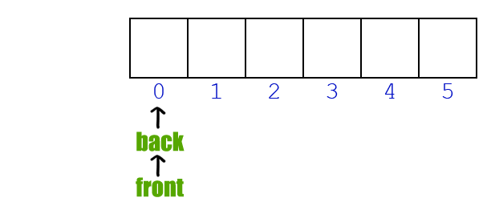

The problem is opposite of this post. We are given a stack data structure with push and pop operations, the task is to implement a queue using instances of stack data structure and operations on them.
A queue can be implemented using two stacks. Let queue to be implemented be q and stacks used to implement q be stack1 and stack2. q can be implemented in two ways:
Method 1 (By making enQueue operation costly): This method makes sure that oldest entered element is always at the top of stack 1, so that deQueue operation just pops from stack1. To put the element at top of stack1, stack2 is used.
While stack1 is not empty, push everything from stack1 to stack2. Push x to stack1 (assuming size of stacks is unlimited). Push everything back to stack1. Here time complexity will be O(n)
If stack1 is empty then error Pop an item from stack1 and return it Here time complexity will be O(1)
Push operation: O(N). In the worst case we have empty whole of stack 1 into stack 2. Pop operation: O(1). Same as pop operation in stack. Auxiliary Space: O(N). Use of stack for storing values.
In this method, in en-queue operation, the new element is entered at the top of stack1. In de-queue operation, if stack2 is empty then all the elements are moved to stack2 and finally top of stack2 is returned.
1) Push x to stack1 (assuming size of stacks is unlimited). Here time complexity will be O(1)
1) If both stacks are empty then error.
2) If stack2 is empty While stack1 is not empty, push everything from stack1 to stack2.
3) Pop the element from stack2 and return it. Here time complexity will be O(n)
Push operation: O(1). Same as pop operation in stack. Pop operation: O(N) in general and O(1) amortized time complexity. In the worst case we have to empty the whole of stack 1 into stack 2 so its O(N). Amortized time is the way to express the time complexity when an algorithm has the very bad time complexity only once in a while besides the time complexity that happens most of time. So its O(1) amortized time complexity, since we have to empty whole of stack 1 only when stack 2 is empty, rest of the times the pop operation takes O(1) time. Auxiliary Space: O(N). Use of stack for storing values.
Queue can also be implemented using one user stack and one Function Call Stack. Below is modified Method 2 where recursion (or Function Call Stack) is used to implement queue using only one user defined stack.
1) Push x to stack1.
1) If stack1 is empty then error.
2) If stack1 has only one element then return it.
3) Recursively pop everything from the stack1, store the popped item in a variable res, push the res back to stack1 and return res